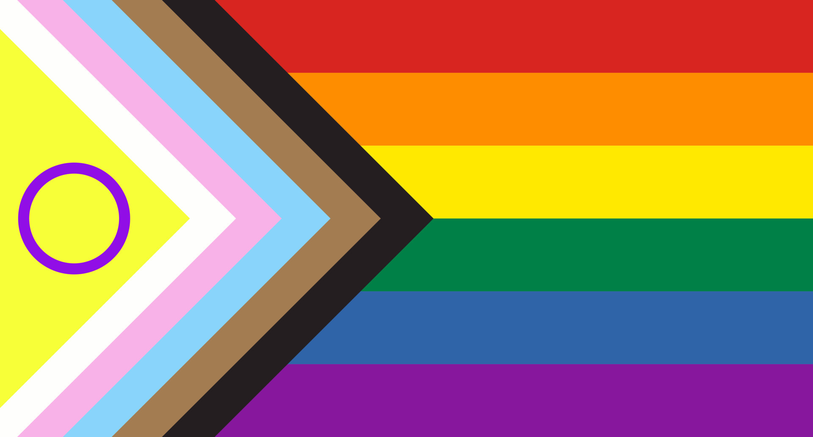
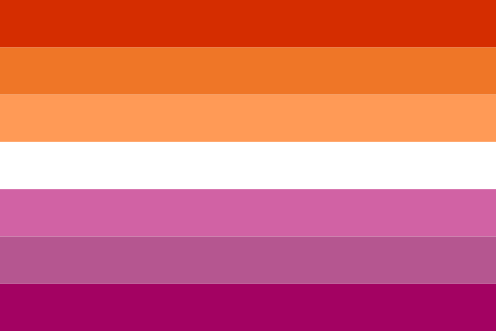
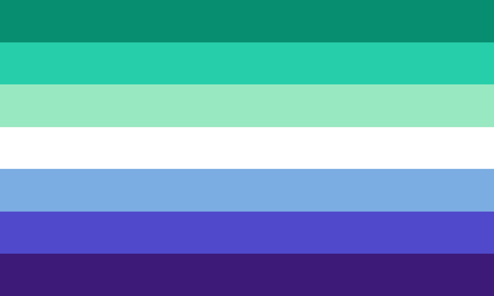
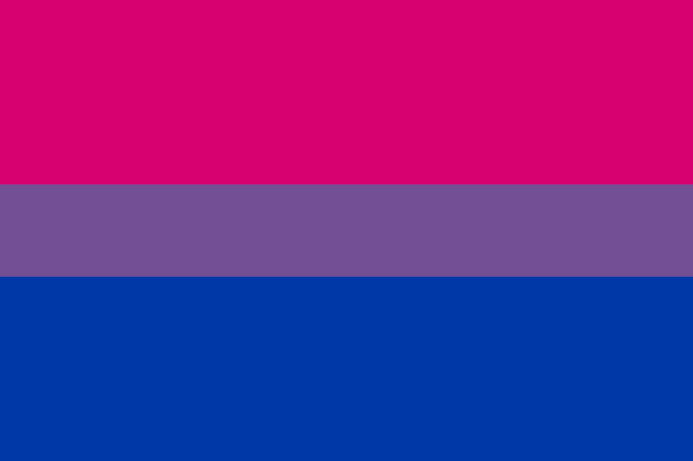
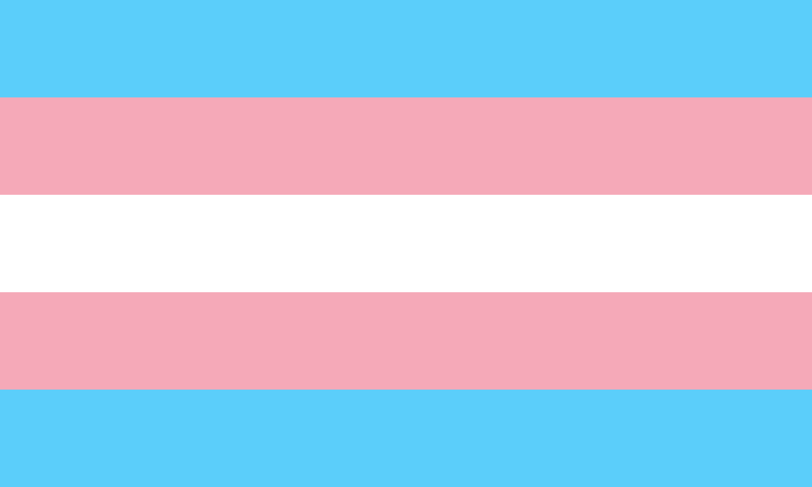
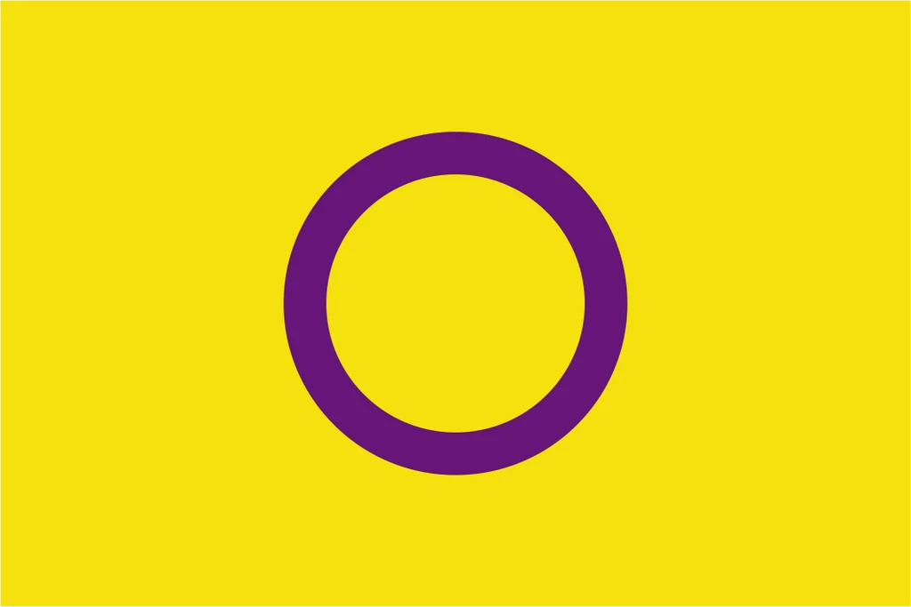
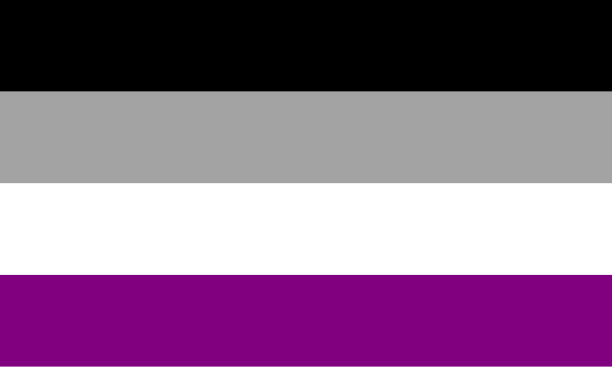
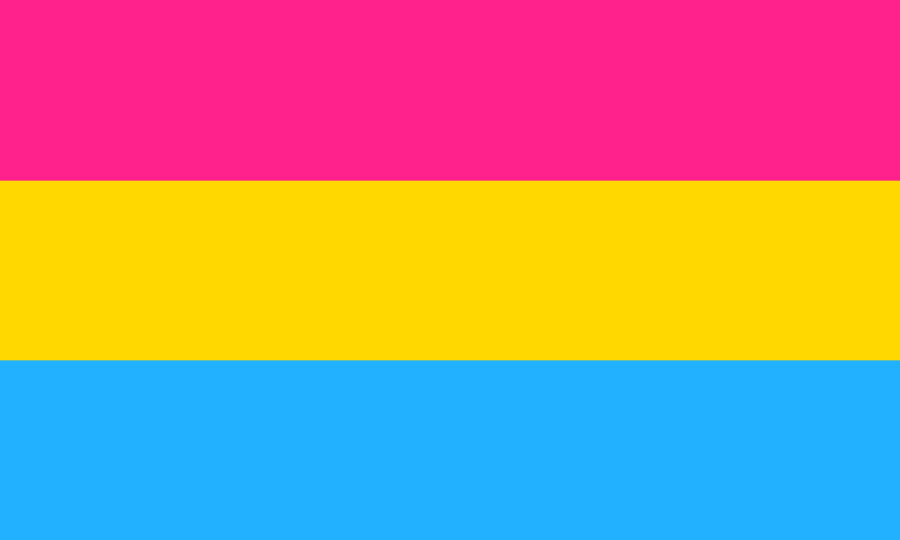
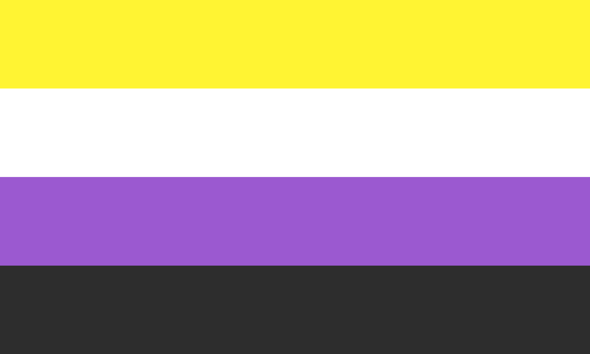
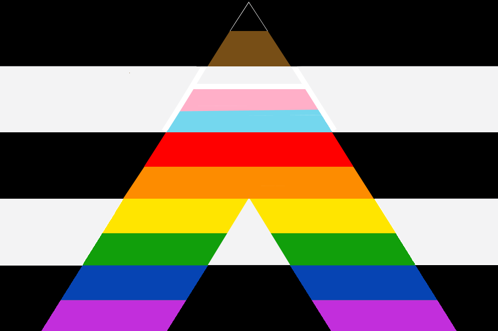

Pride Flags
You have probably seen rainbow flags displayed in various places, but did you know that most sexualities have their own Pride flag themselves?
Here we have displayed various well know pride flags and what they represent.
Pride Flags
| Flag Name | Definition |
|---|---|
 Intersex-inclusive Progressive Flag |
Represents the LGBTQIA+ community while highlighting inclusion of transgender people, intersex people, people of color, and communities affected by discrimination and stigma. |
 Lesbian |
Represents women and some nonbinary people who are primarily attracted to women. |
 Gay |
Men who and some nonbinary people who are primarily attracted to men. |
 Bisexual |
People who are attracted to the same gender, the opposite gender, and mutiple genders that non-conform. |
 Transgender |
People whose gender identity differs from the sex they were assigned at birth. |
 Intersex |
Wide range of natural variations in sex characteristics, including chromosomes, gonads, hormones, internal reproductive organs, and external genitalia |
 Asexual |
People who experience little to no sexual attraction to others. |
 Pansexual |
Represents people who may be attracted to others regardless of gender. |
 Non-Binary |
People whose gender identity does not fit exclusively into the catergories of male or female. |
Allies

Allies are not part of the LGBTQIA+ community, but they are important to them and a flag was created to represent their support.